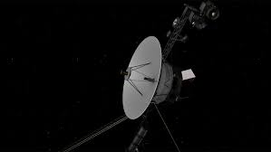
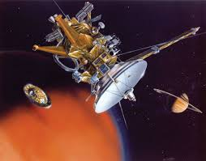

Voyager 1 conducted a flyby of Saturn, capturing stunning images and data about its rings and moons.
 voyager1The Cassini spacecraft studied Saturn, its rings, and its moons, making groundbreaking discoveries during its mission.
 Cassini-Huygens at NASAThis innovative mission will send a rotorcraft to Titan, Saturn's largest moon, to explore its surface and atmosphere.
dragonfly mission